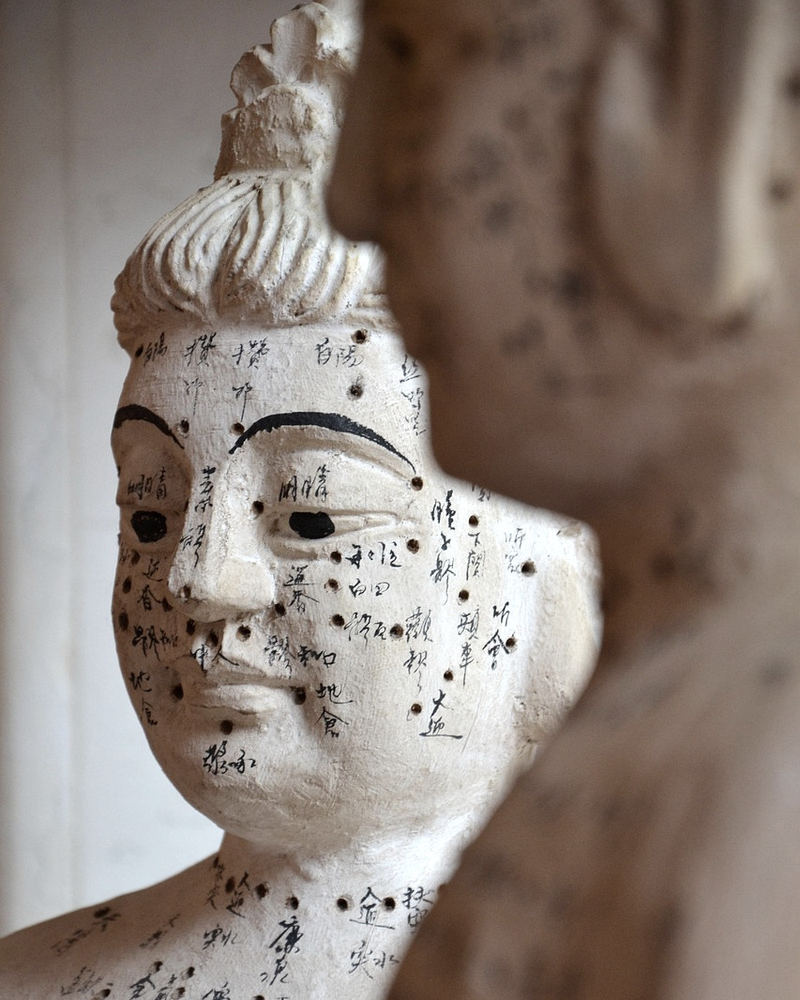
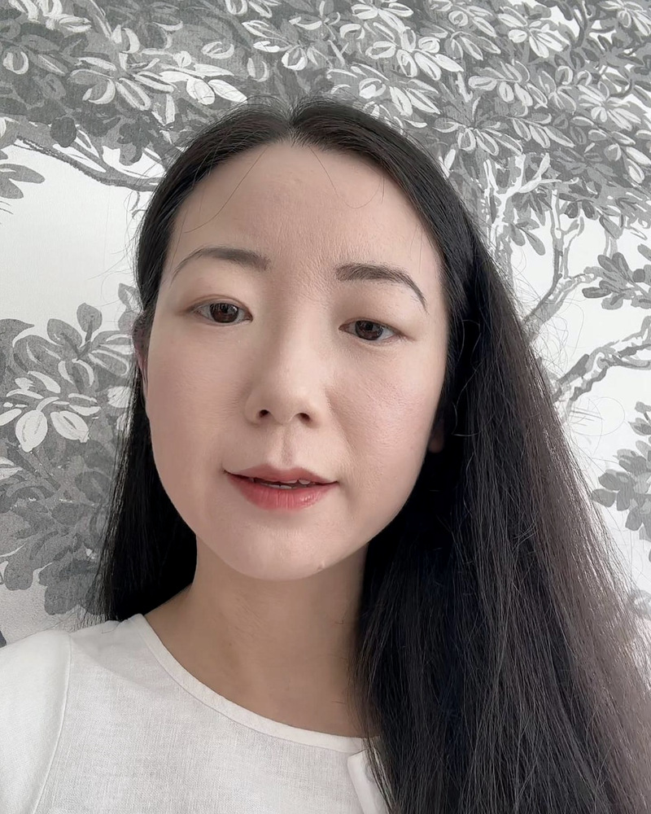

We arrange two readings from China: one by a senior physician at a licensed Traditional Chinese Medicine clinic, one by an independent practitioner. Both are done at a distance, and either stands on its own.

They arrive at different points. Some after years of it, some just starting to look for another way. Any one of these is reason enough.
Years of fatigue, digestion that never settles or sleep that doesn't restore, and a file of results within normal range. Traditional Chinese Medicine asks different questions from the ones your tests answer, alongside your medical care, never in place of it.
Back, neck, shoulder, knee, hip. Whether it started last month or fifteen years ago, it is looked at as part of the whole of you, alongside your doctor's care, never in place of it.
You'd like to understand how your body is running and what to do about it day to day: what to eat, how to sleep, how to move, matched to you.
Both start with an online form and a few photos. Neither requires you to travel.
Written by a senior physician at our partner clinic in Ningbo, China: what they see, and what to change day to day.
What it coversAn independent practitioner reads your whole picture and what she thinks has shaped it, live on video with an interpreter.
What it coversBaoputang is a licensed Traditional Chinese Medicine clinic in Ningbo, China, with nine senior physicians. Two of them write the £79 reports. The £850 reading is given by an independent practitioner, separate from the clinic.
Master's-trained, grounded in Huang Yuanyu's classical texts.
Master's in TCM internal medicine, Chengdu University of Chinese Medicine.
Working with clients from her own practice in China since 2002.
There is no fixed programme. If sessions in person would add anything, your Observation Reading estimates how many and what they would cost, and the £850 is credited in full if you go ahead. You decide after you have read it.

I'm Sara. When every test came back normal and I still didn't feel right, Traditional Chinese Medicine was the first thing that asked how I was living. YinYang Well is how you get that kind of one-to-one read for yourself.
Not sure which? Read about the TCM Wellness Report or the Observation Reading first. If you would rather ask something before you start, write to yinyangwell@wesconnex.com.
The meal-deal habit, and what cold food asks of your body.
Two kinds of tired that Western thinking lumps together.
The hour you wake is a clue, not a coincidence.